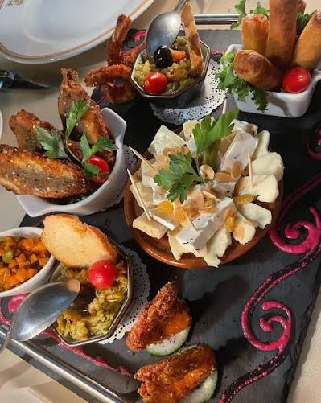
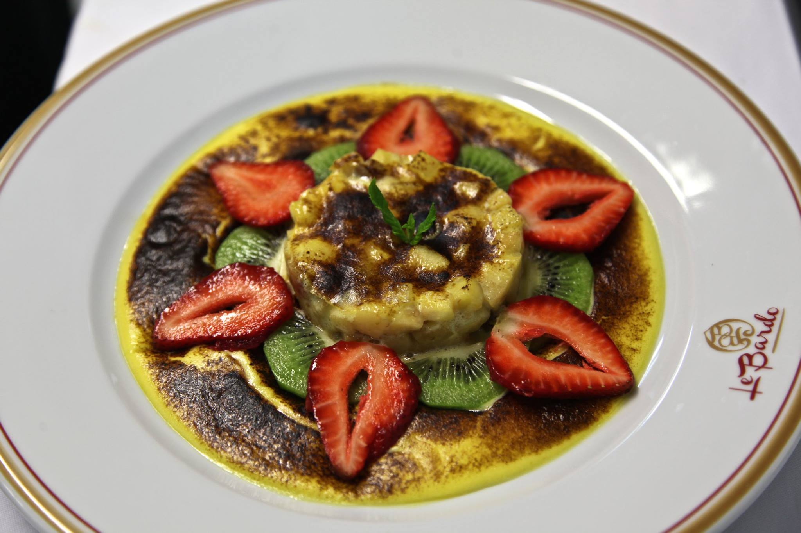
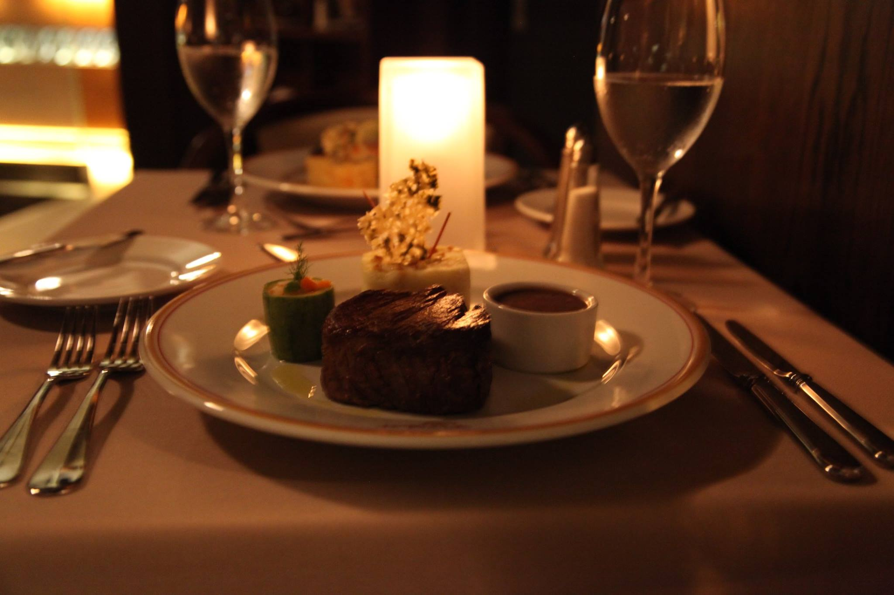

Sidi M'Hamed · Rue Didouche Mourad
Installez-vous dans notre cadre intimiste, 135 Rue Didouche Mourad, Sidi M'Hamed, et laissez-vous séduire par notre cuisine raffinée, nos cocktails signatures et nos options végétaliennes.
Bienvenue au Bardo
Dès le seuil franchi, Le Bardo vous accueille dans une atmosphère feutrée où chaque lumière tamisée, chaque texture et chaque parfum a été pensé pour vous. Notre équipe vous reçoit avec un service attentif et personnalisé, à l'image d'une maison qui vous connaît déjà.
Aux beaux jours, notre élégante terrasse extérieure s'anime dès la tombée du jour : un cadre suspendu entre la fébrilité de la ville et la douceur d'une soirée algéroise, verre en main, sous nos guirlandes de lumières chaudes.
Signatures de la maison



Ils ont aimé
★★★★★
Une expérience gastronomique remarquable dans un cadre idéal pour les familles. La cuisine est raffinée et savoureuse, le service est aux petits soins et l'ambiance, à la fois chic et décontractée.
— Nordin N.
★★★★★
La cuisine est parfaite et raffinée. Nous avons pris des crevettes à l'ail et à la sauce rouge et une Rechta, c'était délicieux. On a fini par un thé et un café gourmand avec pâtisseries délicieuses.
— Dj BO
★★★★★
Service irréprochable, les plats succulents, personnel aux petits soins et une ambiance chaleureuse... je recommande ce restaurant si vous êtes de passage à Alger.
— Farah S.
★★★★★
Une cuisine exquise, un personnel attentionné et une ambiance feutrée. Un immense merci au Chef pour la délicatesse de ses plats. C'était un chef d'œuvre pour les papilles.
— Nadia B.
★★★★★
Merveilleuse soirée au Bardo. Les plats sont absolument délicieux et le service est impeccable. Nous reviendrons si nous repassons par Alger !
— Lisa R.
★★★★★
Excellent restaurant avec un accueil chaleureux, service rapide, personnel souriant et gentil. Le menu est varié entre traditionnel et moderne, vos papilles n'en seront que ravies.
— Lili D.
← Faites glisser pour voir plus d'avis →